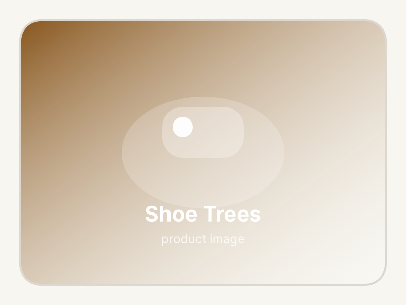

Woodlore Aromatic Red Cedar Shoe Trees Pair
Crafted from natural red cedar to absorb moisture and maintain leather dress shoe shape.
- Natural fresh cedar fragrance
- Prevents leather cracking & creasing
- Brass expansion spring fitting
Masking sneaker odor with scented sprays only creates worse smells. Activated bamboo charcoal insert bags and UV shoe dryers eliminate moisture and bacteria at the root.

The easiest non-toxic fix is a set of Activated Bamboo Charcoal Shoe Bags. Drop them into your shoes overnight; porous charcoal traps moisture and neutralizes odor naturally.

Fragrance-free, chemical-free, and reusable for up to 2 years by placing in sunlight once a month.
Gently warms and circulates air inside damp work boots and running shoes to eliminate bacteria.
Enclosed shoes trap foot perspiration. When shoes are worn every day without drying completely, bacteria multiply rapidly. Removing moisture overnight stops odor before it begins.
Avoid wearing the exact same pair of shoes two days in a row. Giving shoes 24 hours to air out with charcoal bags extends shoe lifespan and prevents bacteria buildup.

Crafted from natural red cedar to absorb moisture and maintain leather dress shoe shape.

A heavy-duty compound spray that breaks down tough sweat molecules instead of masking them.

Cushioned insoles activated with charcoal and baking soda that fit into any sneaker.
Drop charcoal bags into everyday sneakers overnight and use an electric shoe dryer for wet work boots or post-workout running shoes.
| Product | Best for | What it helps with | Why people like it |
|---|---|---|---|
| Charcoal Deodorizer Bags | Sneakers & casual shoes | Overnight moisture absorption | 100% natural, reusable 2 years |
| Electric Shoe Dryer | Work boots & sports gear | Drying wet sweat & rain dampness | Silent thermal gentle warm drying |
| Cedar Shoe Trees | Dress shoes & leather boots | Preserving shape & cedar aroma | Aromatic natural red cedar wood |
| FunkAway Odor Spray | Gym bags & cleats | Breaking down heavy sweat molecules | Fast-acting molecular spray |